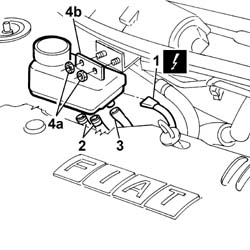

3330C34 brake fluid reservoir - r + r and wash inside - versions with r/h drive and abs
- Path
- Procedures > 33 BRAKES > 3330 HYDRAULIC BRAKE SYSTEM > 3330C BRAKE PUMP, RESERVOIR AND LOAD PROPORTIONING VALVE > 3330C34 brake fluid reservoir - r + r and wash inside - versions with r/h drive and abs
- Kind
- repair procedure (removal / refitting; the operation number is the code)
- Applies to
- all engines; all production periods
- Interactive page
- https://sloeber94.github.io/elrnDB-fDbl/en/#/2584659
Applies to: all engines; all production periods; only with equipment: Right hand drive
 Removing
Removing
 Refitting
RefittingOpen the bonnet
Disconnect the positive battery terminal.
3330C40 brake fluid reservoir plug - r + r
Drain the brake fluid from the reservoir.
1. Disconnect the electrical connection for the brake fluid level sensor.
 | Name | Connector |
|---|---|---|
- | Brake fluid level (switch) sensor | K25 |
2. Disconnect the flexible fluid pipes to the pump from the reservoir.
3. Disconnect the clutch pump fluid pipe from the reservoir.
4. Undo the fixing nuts (2a) and remove the brake fluid reservoir.

Applies to: all engines; all production periods; only with equipment: Right hand drive
Refitting
RemovingConect the electrical connection for the brake fluid level sensor.
| Name | Connector |
|---|---|---|
- | Brake fluid level (switch) sensor | K25 |
Connect the clutch fluid pipe to the reservoir.
Connect the fluid supply and return pipes to the pump.
Tighten the two nuts fixed to the mounting bracket.